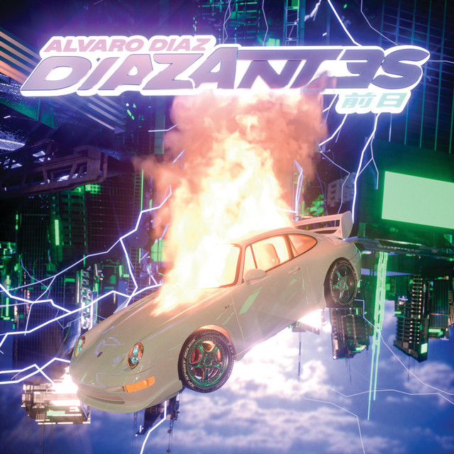
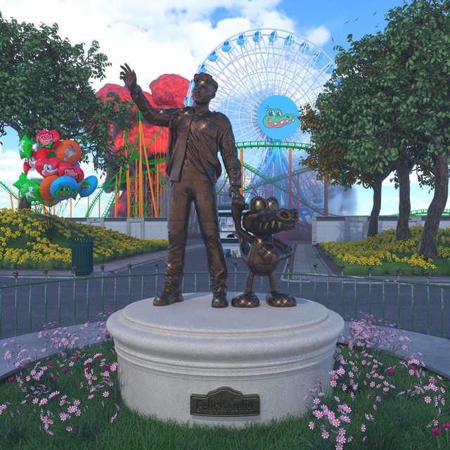

Hato Rey (2015)
un mixtape que muestra el reflejo de toda una historia de esfuerzo y abre un nuevo ciclo en la carrera del rapero: el salto a las grandes ligas.
Desde 2014, seguir de cerca la trayectoria de Álvaro Díaz es como ver una emocionante carrera. Pocos en la escena y por supuesto en el género trabajan tanto como él. Semana a semana nos comparte un motivo para hablar de él: una nueva canción, un remix, una colaboración, un video, una fecha importante. Y a cada paso que da se nota el progreso, comparen un “Chicas de la Isla” contra un “ARES” para darse cuenta del nivel que han alcanzado las barras de este capo latino.
Tracklist:
- La Milla De Oro
- Super Exclusivo
- Groupie Love
- Chicas De La Isla
- Miles De Mujeres (ft. Randy)
- Mal Necesario (ft. Deborah Blues & Joyce Santana)
- Insomnio (ft. Derek Novah)
- Invisible (DM)
- 6 A.M
- Prejuicios (La Gente Sabe)
- P.Q.H.T.M
- No Es Mi Culpa (ft. Eptos Uno & Muelas De Gallo)
- Gastar (ft. Fuete Billete & Myke Towers)
- Oda A Las Tetas by PJ Sin Suelas (ft. Álvaro Díaz)
- Bang Bang (ft. Joyce Santana)
Escuchar en Spotify:
San Juan Grand Prix (2016)
San Juan Grand Prix es el segundo material de larga duración que publica Álvaro, cuenta con nueve tracks y tal como lo prometen los títulos de las canciones, todas ellas contienen beats brillosos, tropicales y muy sexuales. El material cuenta con las colaboraciones de Lara Project, Young Martino, Luny Tunes, Orteez, Monvco, Hydro y Vfro. En este disco también se incluye «Todo Bien» un track que Álvaro le dedica a su madre y que, según él, es el mejor que ha hecho en toda su carrera.
Este es un álbum conceptual, tiene canciones que se conectan con canciones anteriores y de igual forma con su disco anterior Hato Rey, este álbum fue inspirado por el conductor de la F1 Ayrton Senna, lo podemos ver por las voces en off hablando en portugués, las grabaciones de estas mismas son narraciones de carreras de Ayrton Senna.
Tracklist:
- Grand Prix (Intro)
- MPH (A Las Millas)(ft. Joyce Santana & Yensanjuan)
- Carro Rápido
- Piso 13 (Mia Wallace)
- Dime Pa' Cuando (ft. Deborah Blues)
- Mantecado de Coco
- Fokin Campeón (skit)
- Tortura China
- Todo Bien
Escuchar en Spotify:
Diaz Antes (2020)
 “Díaz antes” es un álbum que recoge sus dos EP’s del último año y pico (“Díaz Antes: Wavy para las babys” y “Diaz Antes: La ciudad de los niños tristes”) y ha añadido varios inéditos muy interesantes.
El trabajo se presenta como si estuviésemos escuchando la radio en el coche, cambiando de dial por los diferentes estados de ánimo que se incluyen en el mismo. Desde el ritmo velocísimo de “Pro” hasta el romanticismo de “Marla Singer”, todo el disco lleva un acompañamiento conceptual, una radio en la que Álvaro Díaz es locutor, anunciante y artista. Un Juan Palomo divertidísimo que eleva un trabajo ya de por sí muy notable. “Díaz Antes” cuenta con un primer tercio animado y descarado, lleno de humor en forma de divertidas cuñas publicitarias que anuncian, por ejemplo, el “Gata Gangster Security System”, un programa para “reeducar” a hombres infieles para que “caminen por la orillita”, entre canciones tan buenas como “Todas mías” o “Dame un break”. Todo esto antes de cambiar de emisora y entrar en “Sadvarito Radio”, una intro que precede a “La ciudad de los niños tristes”, canciones más emocionales y melancólicas brilla igual, ofreciendo una versión más introspectiva de su mismo imaginario.
Tracklist:
- Pro
- Todas Mías (ft C. Tangana)
- Asiento de Atrás
- Dame Un Break
- Deportivo by Álvaro Díaz, Cazzu & Calleb Calloway
- Uwi by Álvaro Díaz & Sousa
- Dale Duro by Álvaro Díaz, Lyanno & Miky Woodz
- El Último Baile (Mía 5) by Álvaro Díaz & Kablito
- Reina Pepiada
- No Te Quiero Perder
- Gongoli (2012) by Álvaro Díaz & Kyoshi Reyes
- ABC by Álvaro Díaz & Yensanjuan
- Marla Singer
- De Nadie by Álvaro Díaz & Sousa
- Lo Que Te Duele by Álvaro Díaz & Yandel
- Baja by Álvaro Díaz & Fuego
- Torque
Escuchar en Spotify:
Felicilandia (2021)
 Es el cuarto álbum del rapero y compositor Álvaro Díaz, así mismo es el disco, el cual muchos medios y fanáticos consideran su mejor material hasta la fecha, incluye colaboraciones con artistas de renombre como Rauw Alejandro, Sebastian Yatra, Tainiy, Feid, Randy [Jowell & Randy], Rawayana, y Jesse Baez, entre otros.
Referente al titulo y la inspiración del álbum, Álvaro explica que, “Felicilandia es un lugar donde los niños tristes van a buscar la felicidad. El disco representa la búsqueda de la felicidad y ese es el concepto.”.
Tracklist:
- Bienvenidos a Felicilandia
- OG Black by Álvaro Díaz & Randy
- Gatillera
- Problemón by Álvaro Díaz & Rauw Alejandro
- 18+1 by Álvaro Díaz & Jesse Baez
- Nitro by Álvaro Díaz & Zizzy
- Casual Day
- Close Friends
- Llori Pari by ÁLvaro Díaz & Feid (ft. Tainy)
- Brilloteo
- D-gratis by Álvaro Díaz & Yensanjuan
- Bbysita
- Shh by Álvaro Díaz & Bratty
- Chinita Linda by Álvaro Díaz & Rawayana
- Online ;( by Álvaro Díaz & Sebastián Yatra
- Para Ya!
Escuchar en Spotify:
Sayonara (2024)

“ESTE DISCO ES DEDICADO A TODAS LAS PERSONAS QUE HAN TENIDO QUE DECIR ADIÓS.”.
SAYONARA es el tercer disco de estudio y el quinto de su carrera. El Puertorriqueño Álvaro Díaz, lanzado el 16 de mayo del 2024, está compuesto por 20 temas, con colaboraciones de Feid, Tainy, Sen Senra, Young Cister, NSQK, paopao, Mora, Quevedo, y Aron Piper. El álbum fue anunciado en el 2021, después de su anterior disco: “Felicilandia”, unos meses después del lanzamiento de este.
Tracklist:
- TE VI EN MIS PESADILLAS
- KAWA
- GATITAS SANDUNGUERAS VOL.1 by Álvaro Díaz & Feid
- PLN
- FATAL FANTASSY by Álvaro Díaz & Tainy
- LENTITO
- 1000 CANCIONES by Álvaro Díaz & Sen Senra
- BYAK by Álvaro Díaz & Rauw Alejandro
- SIN PODERES by Álvaro Díaz & Young Cister
- MAMI 100PRE SABE (INTERLUDE) by ÁLvaro Díaz & Nsqk
- EN PR NO HACE FRíO by Álvaro Díaz & paopao
- A Mi Nombre by Álvaro Díaz & Mora
- QUIÉN TE QUIERE COMO EL NENE
- YOKO
- MAJIN BUU
- QUIZAS SI QUIZAS NO by Álvaro Díaz & Quevedo
- RAMONA FLOWERS
- FUNERAL by ÁLvaro Díaz & ARON
- GOLDEN GUN
- NO LLORES SI ME VOY